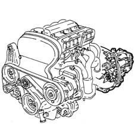
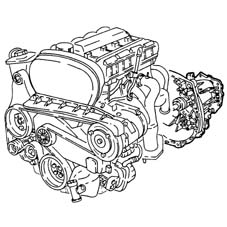
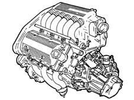
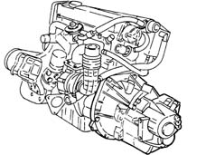

1004B power unit assembly
- Path
- Descriptions > 10 ENGINE > 1004 ENGINE AND POWER UNIT > 1004B power unit assembly
- Kind
- system description
- Applies to
- all engines; all production periods
- Interactive page
- https://sloeber94.github.io/elrnDB-a156/en/#/3232808
Applies to: all engines; all production periods
It consists of:
- engine
- clutch assmbly
- gearbox with differential
The power unit is installed transversally at the front and raked forward by 18° (towards the front of the car).

It consists of:
- engine
- clutch assembly
- gearbox with differential
The power unit is installed transversally at the front and raked forward by 18° (towards the front of the car).

Applies to: engines: 2.5 V6; all production periods
It consists of:
- engine
- clutch assembly
- gearbox with differential
The power unit is installed transversally at the front and raked forward by 14° (towards the front of the car).

Applies to: engines: 1.9 JTD 8v , 2.4 JTD 10v; all production periods
It consists of:
- engine
- clutch assembly
- gearbox with differential
The power unit is installed transversally at the front and raked forward by 14° (towards the front of the car).
